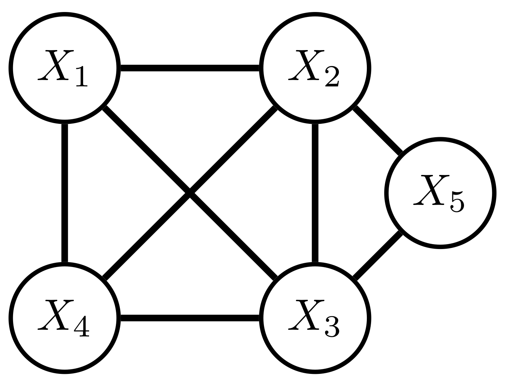
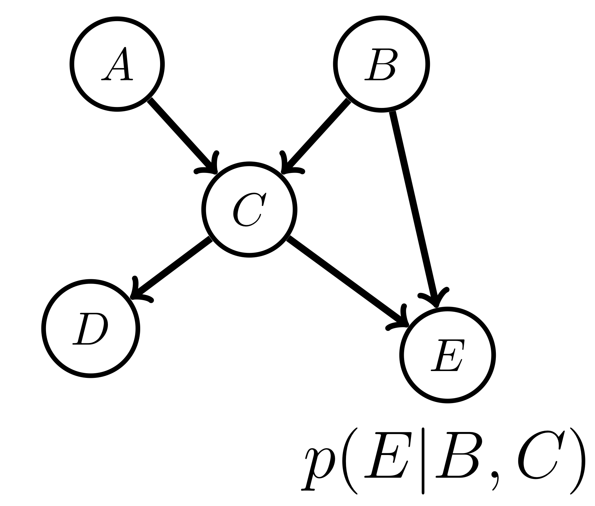
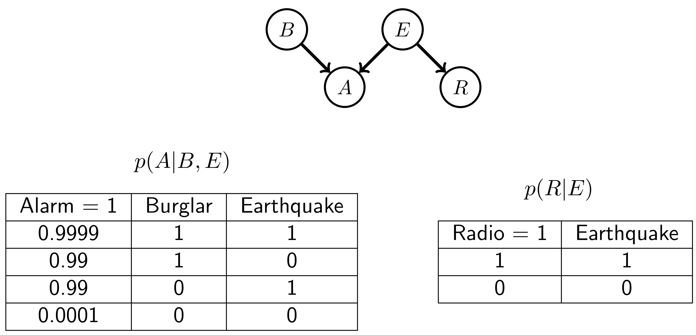
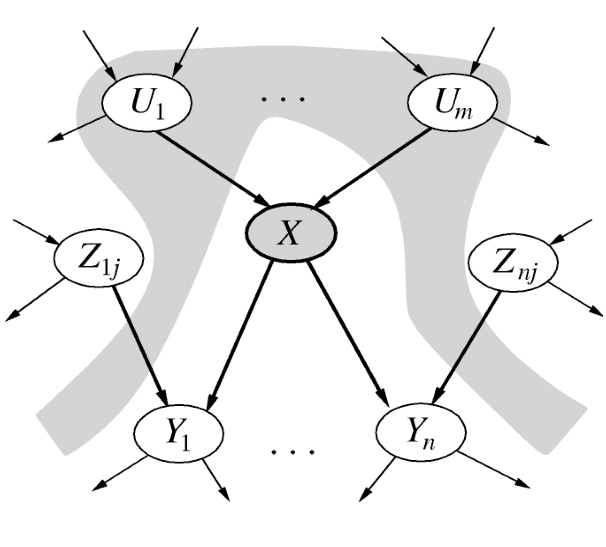
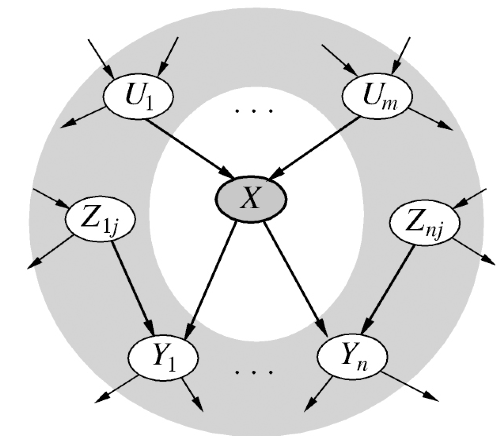
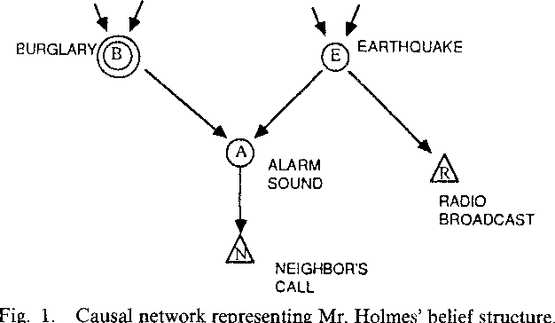
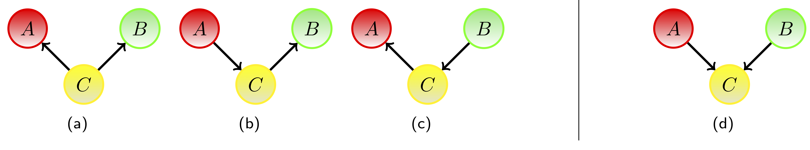
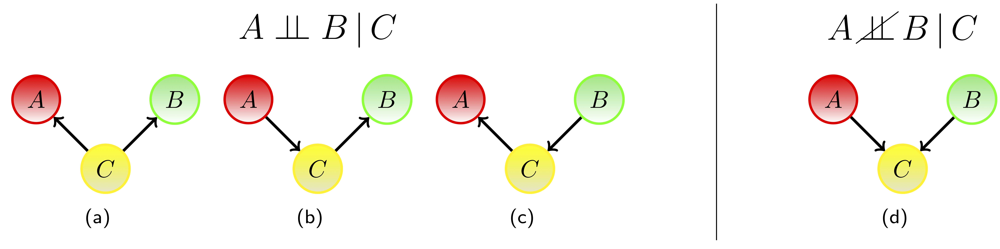
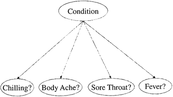
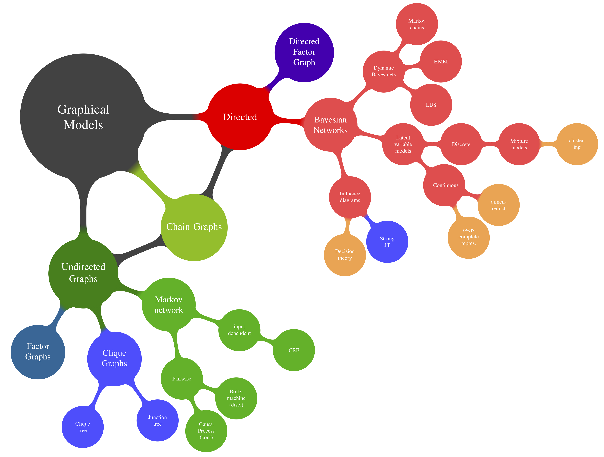

07 Graphical Models
Advanced Machine Learning
Bayesian View on Probabilities
In a Bayesian View a probability is a summary of an opinion:
- An individual who assigns a belief of 0 to an event has no confidence that the event will occur.
- Conversely, assigning a belief of 1 implies that the individual is absolutely certain of an event occurring.
- Beliefs between 0 and 1 allow for weightings of other outcomes.
Important: This probability (the belief) is not describing a fact, but is connected to an individual.
It therefore allows to assign different beliefs about the occurrence of an event to different people. It does not say anything about who or that anybody is wrong.
Bayesian interpretation of probability
Probabilities = distribution over all possible outcomes (states) of an event as subjective „degree of belief“ in this event
Use probability theory to model how degrees of beliefs dynamically change:
- conditional probability \(P(A|B)\) = posterior probability of \(A\),
- unconditional probability \(P(A)\) = prior probability of \(A\), without any evidence whatsoever conditioned on evidence about \(B\)
- conditional probability \(P(B|A)\) = likelihood of \(B\) given \(A\)
➔ use this to describe the fundamental organization of human knowledge where an event is always measured against or correlated with a context of its occurrence.
Probabilistic Representation
Gaussian Probability Distribution
GPD provides an example for a continuous probability distribution. They are characterized by a mean value and the covariance.

Discrete Probabilities
A Normal Distribution is an assumption on our data – we assume the form of our distribution. In many cases this has to be established.
As the typical example for a discrete probability distribution: a dice has a number of outcomes which is usually setup as a table:
| Face | 1 | 2 | 3 | 4 | 5 | 6 |
|---|---|---|---|---|---|---|
| Count | 17 | 16 | 14 | 20 | 18 | 15 |
Example: Probabilities in Basketball
In many sports advanced statistics are used (especially in the U.S.). One example is basketball which helps illustrate different aspects of probability values.
Consider two players and we are looking at their free throw percentages: The percentage gives us a good probability estimate for how likely he will score when attempting a free throw.
Probabilities in Basketball 2
Looking at other values gets more tricky — considering another player for comparison, the second player seems much better in two point shots (FG).
In basketball such probabilities are used for decision making = to whom should I give the ball? Who will make the shot?
Importantly, here again pooling all field goal attempts together is not a good idea. The outcome of the attempt depends on many other factors.
Example: Conditional Probabilities in Basketball
Their shooting depends on the place on the field.
Recap: Conditional probabilities
Unconditional probability: \(P(A=a)\)
- probability of \(A\) being in state \(a\) regardless of anything
Conditional probability: \(P(A=a|B=b)\)
- probability of \(A\) being in state \(a\) under the constraint that \(B\) is in state \(b\)
Central rule for relating both:
- Product rule: \(P(A,B) = P(A|B)\times⋅ \times P(B) = P(B|A) \times ⋅ \times P(A)\)
- relates the unconditional joint probability of two events „A and B“ to the (un-)conditional probabilities of the single events
Prior, Likelihood and Posterior
For data \(D\) and variable \(\theta\), Bayes’ rule tells us how to update our prior beliefs about the variable \(\theta\) in light of the data to a posterior belief: \[ \underbrace{p(\theta | D)}_\text{posterior} = \frac{\overbrace{p{D|\theta)}}^\text{likelihood} \ \overbrace{p{\theta}}^\text{prior}}{\underbrace{p{(D)}}_\text{evidence, marginal likelihood}} \] The term likelihood is used for the probability that a model generates observed data.
Prior, Likelihood and Posterior
More fully, if we condition on the model \(M\), we have \[ p(\theta|D, M) =\frac{p(D|\theta, M) p(\theta | M)}{p(D | M)} \]
where we see the role of the likelihood \(p(D|\theta,M)\) and marginal likelihood \(p(D|M)\).
The MAP assignment
The Most probable A Posteriori (MAP) setting is that which maximises the posterior, \[ \theta_* = \text{argmax}_{\theta} p(\theta | D, M) = \text{argmax}_{\theta} p(\theta, D| M) \]
The Max Likelihood assignment, \(p(\theta | M)\) = const.
\[ \theta_* = \text{argmax}_{\theta} p(\theta, D| M) = \text{argmax}_{\theta} p( D | \theta, M) \]
Example: Bayes — Throwing Darts
The probability of event \(x\) conditioned on knowing event \(y\) (or more shortly, the probability of \(x\) given \(y\)) is defined as \[ p(x|y) = \frac{p(x,y)}{p(y)}=\frac{p(y|x) p(x)}{p(y)} \]
\[ p(\text{region 5}|\text{not region 20}) = \frac{p(\text{region 5, not region 20})}{p(\text{not region 20})} = \frac{1/20}{19/20}= \frac{1}{19} \]
Interpretation
$ p(A = a|B = b)$ should not be interpreted as Given the event \(B = b\) has occurred, \(p(A = a|B = b)\) is the probability of the event \(A = a\) is occurring’.
The correct interpretation should be \(p(A = a|B = b)\) is the probability of \(A\) being in state \(a\) under the constraint that \(B\) is in state \(b\).
Probability tables
The a priori probability that a randomly selected Great British person would live in England, Scotland or Wales, is \(0.88, 0.08\) and \(0.04\) respectively.
We can write this as a vector (or probability table) : \[ \left( \begin{array}{ccc} p(Cnt = E)\\ p(Cnt = S)\\ p(Cnt = W)\end{array} \right) = \left( \begin{array}{ccc} 0.88\\ 0.08\\ 0.04\end{array} \right) \] whose component values sum to 1.
The ordering of the components in this vector is arbitrary, as long as it is consistently applied.
Probability tables
We assume that only three Mother Tongue languages exist: English (Eng), Scottish (Scot) and Welsh (Wel), with conditional probabilities given the country of residence, England (E), Scotland (S) and Wales (W). Using the state ordering: \[ MT=[\text{Eng, Scot, Wel}]; Cnt=[\text{E, S, W}] \] We can setup a conditional probability table: \[ p(MT | Cnt) = \left( \begin{array}{ccc} 0.95 & 0.7 & 0.6\\ 0.04 & 0.3 & 0.0\\ 0.01 & 0.0 & 0.4\end{array}\right) \]
Marginalization
The distribution \(p(Cnt,MT) = p(MT|Cnt)p(Cnt)\) can be written as a \(3 \times 3\) matrix with rows indexed by country and columns indexed by Mother Tongue: \[ \left( \begin{array}{ccc} 0.95 \times 0.88 & 0.7 \times 0.08 & 0.6 \times 0.04 \\ 0.04 \times 0.88 & 0.3 \times 0.08 & 0.0 \times 0.04\\ 0.01 \times 0.88 & 0.0 \times 0.08 & 0.4 \times 0.04 \end{array}\right) = \left( \begin{array}{ccc} 0.836 & 0.056 & 0.024 \\ 0.0352 & 0.024 & 0.\\ 0.0088 & 0.0 & 0.016 \end{array}\right) \] By summing the columns or rows, we get the marginal \[ p(Cnt) = \left( \begin{array}{c} 0.88 \\ 0.08 \\ 0.04 \end{array}\right), p(MT) = \left( \begin{array}{c} 0.916 \\ 0.0592 \\ 0.0248 \end{array}\right) \]
Probability tables
Large numbers of variables
For joint distributions over a larger number of variables, \(x_i, i = 1, . . . , D\), with each variable \(x_i\) taking \(K_i\) states, the table describing the joint distribution produces an array with a large number of entries: \[ \prod_{i=1}^D K_i\]
Explicitly storing tables therefore requires space exponential in the number of variables, which rapidly becomes impractical for a large number of variables.
Probability tables
Indexing
A probability distribution assigns a value to each of the joint states of the variables. For this reason, \(p(T,J,R,S)\) is considered equivalent to \(p(J,S,R,T)\) (or any such reordering of the variables), since in each case the joint setting of the variables is simply a different index to the same probability.
Independence
Variables \(x\) and \(y\) are independent if knowing one event gives no extra information about the other event. Mathematically, this is expressed by \[ p(x, y) = p(x)p(y) \]
Independence of x and y is equivalent to \[ p(x|y) = p(x) \Leftrightarrow p(y|x) = p(y) \]
If \(p(x|y) = p(x)\) for all states of \(x\) and \(y\), then the variables \(x\) and \(y\) are said to be independent. We write then \(x \perp\!\!\!\perp y\).
Interpretation
Note that \(x \perp\!\!\!\perp y\) doesn’t mean that, given \(y\), we have no information about \(x\). It means the only information we have about \(x\) is contained in \(p(x)\).
Conditional Independence
\[X \perp\!\!\!\perp Y | Z\] denotes that the two sets of variables \(X\) and \(Y\) are independent of each other given the state of the set of variables \(Z\).
This means that \(p(X,Y|Z) = p(X|Z)p(Y|Z)\) and \(p(X|Y,Z) = p(X|Z)\) for all states of \(X,Y,Z\).
In case the conditioning set is empty we may also write \(X \perp\!\!\!\perp Y\) for \(X \perp\!\!\!\perp Y | \{\}\), in which case \(X\) is (unconditionally) independent of \(Y\).
Conditional Independence example
Based on a survey of households in which the husband and wife each own a car:
wife’s car type \(\perp\!\!\!\perp\) husband’s car type | family income, \(p(inc = low) = 0.9\)
There are 4 car types, the first two being ‘cheap’ and the last two being ‘expensive’. Using \(w\) for the wife’s car type and \(h\) for the husband’s: \[ p(w | inc = \text{low}) = \left( \begin{array}{c} 0.7 \\ 0.3 \\ 0 \\ 0 \end{array}\right), p(w | inc = \text{high}) = \left( \begin{array}{c} 0.2 \\ 0.1 \\ 0.4 \\ 0.3 \end{array}\right) \]
\[ p(h | inc = \text{low}) = \left( \begin{array}{c} 0.2 \\ 0.8 \\ 0 \\ 0 \end{array}\right), p(h | inc = \text{high}) = \left( \begin{array}{c} 0 \\ 0 \\ 0.3 \\ 0.7 \end{array}\right) \]
Conditional Independence example
Then the marginal distribution \(p(w, h)\) is \[ p(w, h) = \sum_{inc} p(w|inc)p(h|inc)p(inc) \]
\[ p(w, h) = \left( \begin{array}{c} 0.126 & 0.504 & 0.006 & 0.014\\ 0.054 & 0.216 & 0.003 & 0.007\\ 0 & 0 & 0.012 & 0.028\\ 0 & 0. & 0.009 & 0.021 \end{array}\right) \] From this we can find the marginals and calculate (for comparison) \[ p(w)p(h) = \left( \begin{array}{c} 0.117 & 0.468 & 0.0195 & 0.0455\\ 0.0504 & 0.2016 & 0.0084 & 0.0196\\ 0.0072 & 0.0288 & 0.0012 & 0.0028\\ 0.0054 & 0.0216 & 0.0009 & 0.0021 \end{array}\right) \]
Conditional Independence example
This shows that whilst \(w \perp\!\!\!\perp h|inc\), it is not true that \(w \perp\!\!\!\perp h\). For example, even if we don’t know the family income, if we know that the husband has a cheap car then his wife must also have a cheap car – these variables are therefore dependent.
Example 2: Inspector Clouseau
Inspector Clouseau arrives at the scene of a crime. The Butler (\(B\)) and Maid (\(M\)) are his main suspects.
The inspector has a prior belief of \(0.6\) that the Butler is the murderer, and a prior belief of \(0.2\) that the Maid is the murderer. These probabilities are independent in the sense that \(p(B,M) = p(B)p(M)\). (It is possible that both the Butler and the Maid murdered the victim or neither).
Example 2: Inspector Clouseau
The inspector’s prior criminal knowledge can be formulated mathematically as follows:
\[\begin{align} &dom(B) = dom(M) = \{\text{murderer,not murderer} \} \\ &dom(K) = \{\text{knife used, knife not used} \} \\ &p(B = \text{murderer}) = 0.6, p(M = \text{murderer}) = 0.2 \\ &p(\text{knife used}|B = \text{not murderer}, M = \text{not murderer}) = 0.3 \\ &p(\text{knife used}|B = \text{not murderer}, M = \text{murderer}) = 0.2 \\ &p(\text{knife used}|B = \text{murderer}, M = \text{not murderer}) = 0.6 \\ &p(\text{knife used}|B = \text{murderer}, M = \text{murderer}) = 0.1 \end{align}\]
The victim lies dead in the room and the inspector quickly finds the murder weapon, a Knife (\(K\)). What is the probability that the Butler is the murderer? (Remember that it might be that neither is the murderer).
Inspector Clouseau
Using \(b\) for the two states of \(B\) and \(m\) for the two states of \(M\), we are searching for \(p(B|K)\):
\[ p(B | K) = \sum_m p(B, m |K) = \sum_m \frac{p(B, m, K)}{p(K)} = \frac{p(B)\sum_m p(K | B,m) p(m)}{\sum_b p(b) \sum_m p(K|b,m)p(m)} \]
Plugging in the values we have
\[\begin{align*} p(B = \text{murderer} | \text{knife}) &= \frac{0.6 (0.2 \times 0.1 + 0.8 \times 0.6)}{0.6 (0.2 \times 0.1 + 0.8 \times 0.6) + 0.4 (0.2 \times 0.2 + 0.8 \times 0.3)} \\ &\approx 0.73 \end{align*}\]
Hence knowing that the knife was the murder weapon strengthens our belief that the butler did it.
Inspector Clouseau - Clarification
The role of \(p(\text{knife used})\) in the Inspector Clouseau example can cause some confusion. In the above, \[ p(\text{knife used}) = \sum_b p(b) \sum_m p(\text{knife used}|b, m)p(m) \] is computed to be \(0.456\). But surely, \(p(\text{knife used}) = 1\), since this is given in the question!
Note that the quantity \(p(\text{knife used})\) relates to the prior probability the model assigns to the knife being used (in the absence of any other information). If we know that the knife is used, then the posterior is of course 1.
Why is independence so important?
It allows one to decompose (factorize) a joint distribution:
- \(p(\text{Cavity,Catch,Toothache})\) ➔ \(2^3=8\) worlds needed for full state of beliefs
But when we apply the product rule: \[\begin{align*} &= p(\text{Toothache, Catch | Cavity}) p(\text{Cavity}) \text{ – product rule}\\ &= p(\text{Toothache | Cavity}) p(\text{Catch | Cavity}) p(\text{Cavity}) \\ & \ \ \text{ cond. independence given cavity} \end{align*}\] This reduces the number of possible worlds.
Indepence – simplifies probabilities
If a cause directly implies multiple effects, all of which are conditionally independent given the cause, then: \[ P(\text{Cause}, E_1, ..., E_n) = P(\text{Cause}) \prod_i (E_i|\text{Cause}) \]
- the cause sufficiently “explains” each effect, knowing about other effects doesn‘t change the belief in it anymore
- Naive Bayes model (also called Bayesian classifier): Bayes rule + presumed independence where there may be none
Joint Distribution:
Explicit representation of joint distribution becomes unmanageable for realistic scenarios.
- computationally expensive,
- involves a huge number which is too large
- to estimate by a human expert,
- or even to store in memory,
- would require large amounts of data and samples for robust estimation,
- probabilities itself would be very small numbers hindering computation,
- and rare events might not be captured which would negatively affect generalization.
The need for structure
We often want to describe many objects (features in a data set for many individuals).
Unfortunately, often the representational and computational cost of probabilistic models grows exponentially with the number of objects represented.
Therefore, ‘simpler’ alternatives (e.g. fuzzy logic) were introduced to avoid some of these diculties.
Graphical Models
Graphical Models
We can use graphs to represent interaction between objects.
Graphical Models combine Graph and Probability theory.
Many of the quantities that we would like to compute in a probability distribution can then be related to operations on the graph.
The computational complexity of operations can often be related to the structure of the graph.
Graphical Models are now used as a standard framework in Engineering, Statistics and Computer Science.
Graphical Models
Graph
A graph consists of nodes (vertices) and undirected or directed links (edges) between nodes.
Graphical Models
Path
A path from \(X_i\) to \(X_j\) is a sequence of connected nodes starting at \(X_i\) and ending at \(X_j\).
Directed Graphs
All edges are directed:
Directed Acyclic Graph
Graph in which by following the direction of the arrows a node will never be visited more than once.
Directed Graphs
Parents and Children
\(X_i\) is a parent of \(X_j\) if there is a link from \(X_i\) to \(X_j\). \(X_i\) is a child of \(X_j\) if there is a link from \(X_j\) to \(X_i\).
Ancestors and Descendants
The ancestors of a node \(X_i\) are the nodes with a directed path ending at \(X_i\). The descendants of \(X_i\) are the nodes with a directed path beginning at \(X_i\).
Undirected Graph - all the edges are undirected

Clique
A clique is a fully connected subset of nodes. \((X_1,X_2,X_4)\) forms a (non-maximal) clique.
Maximal Clique
Clique which is not a subset of a larger clique. \((X_1, X_2, X_3, X_4)\) and \((X_2, X_3, X_5)\) are both maximal cliques.
Belief Networks (Bayesian Networks)
A belief network is a directed acyclic graph in which each node has associated the conditional probability of the node given its parents.

The joint distribution is obtained by taking the product of the conditional probabilities:
\[ p(A, B, C, D, E) = p(A)p(B)p(C|A, B)p(D|C)p(E|B, C) \]
Belief Networks (Bayesian Networks)
Generally, a Bayesian Network is satisfied by one and only one probability distribution given by the chain rule for Bayesian networks.
- Structure = set of nodes and a set of edges
- Parametrization = set of conditional probabilities
Example – Part 1
Sally’s burglar Alarm is sounding. Has she been Burgled, or was the alarm triggered by an Earthquake? She turns the car Radio on for news of earthquakes.
Choosing an ordering
Without loss of generality, we can write
\[\begin{align*} p(A, R, E, B) &= p(A|R, E, B)p(R, E, B) \\ &= p(A|R, E, B)p(R|E, B)p(E, B) \\ &= p(A|R, E, B)p(R|E, B)p(E|B)p(B) \\ \end{align*}\]
Example - Assumptions:
- The alarm is not directly influenced by any report on the radio: \(p(A|R, E, B) = p(A|E, B)\)
- The radio broadcast is not directly influenced by the burglar variable: \(p(R|E, B) = p(R|E)\)
- Burglaries don’t directly ‘cause’ earthquakes, \(p(E|B) = p(E)\)
Therefore \(p(A, R, E, B) = p(A|E, B)p(R|E)p(E)p(B)\)
Example 2

The remaining tables are \(p(B = 1) = 0.01\) and \(p(E = 1) = 0.000001\). The tables and graphical structure fully specify the distribution.
Example 3 – Inference
Initial Evidence: The alarm is sounding. Is there a burglar?
\[\begin{align*} p(B = 1|A = 1) &= \frac{\sum_{E,R} p(B = 1,E,A = 1,R)}{\sum_{B, E, R} p(B, E, A=1, R)} \\ &= \frac{\sum_{E,R} p(A=1 | B = 1,E) p(B=1)p(E)p(R|E)}{\sum_{A=1 |B, E} p(B) p(E) p(R|E)} \approx 0.99 \end{align*}\]
Additional Evidence: The radio broadcasts an earthquake warning – a similar calculation now gives \(p(B = 1|A = 1, R = 1) \approx 0.01\).
Initially, because the alarm sounds, Sally thinks that she’s been burgled. However, this probability drops dramatically when she hears that there has been an earthquake.
The earthquake ‘explains away’ to an extent the fact that the alarm is ringing.
Bayesian Networks – Causal Interpretation
By way of its mathematical definition, the Bayesian Network represents a set of conditional independence assumptions: each node is conditionally independent of its non-descendants, given its parents
- the parents of node \(X\) are causally interpreted as causes of \(X\), descendants of \(X\) as effects of \(X\)
- having information about the direct causes of \(V\), the belief in \(X\) is no longer influenced by any other information, except about the effects of \(X\)

Markov Blanket
Markov Blanket
A node‘s Markov blanket (MB) = all parents, children, and other parents of children of \(X\). Given its Markov Blanket, X is conditionally independent of all other nodes outside of the Markov Blanket.
The MB carries all information about X, or “insulating” X from any external informational influence

Example revisited
"I’m at work, neighbor John calls to say my burglar alarm is ringing. Sometimes it’s set off by minor earthquakes. John sometimes confuses the alarm with a phone ringing. Real earthquakes usually are reported on radio.This would increase my belief in the alarm triggering and in receiving John‘s call.“
Variables: Burglary,Earthquake,Alarm,Call,Radio
Network topology reflects believed causal structure of the domain:
- burglar and earthquake can set the alarm off
- alarm can cause John to call
- earthquake can cause a radio report
- plus some independence assumptions
Example revisited 2
- given Alarm, Call is cond. indep. of Earthquake, Burglary, Radio
- given Earthquake, Radio is cond. indep. of Alarm, Burglary, Call
- given Earthquake and Burglary, Alarm is cond. indep. of Radio
- given no descendant, Earthquake and Burglary are indep.

Independence in Belief Networks
Conditional independence is not always immediately clear. We would like to have a general algorithm for reading it from the graph.
Consider the simplest case of the joint distribution \(p(x_1, x_2, x_3)\)
- no indep. assumption: six different factorisations \(P(x_{i1}|x_{i2},x_{i3})P(x_{i2}|x_{i3})P(x_{i3})\) and different DAGs, representing the same distribution
- one indep. assumption: four possible graphs left - which ones are equivalent?

Independence in Belief Networks

- In (a), (b) and (c), \(A, B\) are conditionally independent given \(C\).
\[\begin{align*} (a) \ p(A, B|C) &= \frac{p(A,B,C)}{p(C)} = \frac{p(A|C)p(B|C)p(C)}{p(C)} = p(A|C)p(B|C)\\ (b) \ p(A, B|C) &= \frac{p(A) p(C|A) p(B|C)}{p(C)} = \frac{p(A,C)p(B|C)}{p(C)} = p(A|C)p(B|C)\\ (c) p(A, B|C) &= \frac{p(A|C)p(C|B)p(B)}{p(C)} = \frac{p(A|C)p(B,C)p(C)}{p(C)} = p(A|C)p(B|C) \end{align*}\]
- In (d) the variables A,B are conditionally dependent given C, \(p(A, B|C) \propto p(C|A, B)p(A)p(B)\).
Independence in Belief Networks

- In (a), (b) and (c), the variables A, B are marginally dependent.
- In (d) the variables A, B are marginally independent.
\[ p(A, B) = \sum_C p(A, B, C) = \sum_C p(A)p(B)p(C|A, B) = p(A)p(B) \]
Different Formalisms
Why do we want to have different types of representation formalisms?
- They have different advantages/disadvantages – so we usually have to consider a tradeoff.
In particular, we are always concerned with two questions:
constructing the model
drawing inference in a model
Individual models are differently specialized on these tasks – and as probabilistic inference easily gets quite expensive there are special models to deal with special types of inferences.
Reasoning with Bayesian networks
Bayesian Models.These are particular good in expressing directed dependencies and using causal explanations for those e.g. when dealing with causes and effects.
We can solve four general types of queries with Bayesian networks:
- probability of evidence: How likely is a complete variable instantiation \(E\) ➔ \(p(E)=\)?
- prior and posterior marginals: How probable is an instantiation of a limited set of variables ➔ \(p(x_1,...,x_m)=\)? or \(p(x_1,...,x_m| E)=\)?
- most probable explanation (MPE): what is the most probable instantiation of all network variables given some evidence \(e\) ➔ \(\vec{x}\) with \(p(x_1,...,x_n|E)=max\)?
- maximum a posteriori hypothesis (MAP):what is the most probable instantiation of a subset of \(m (m<n)\) variables given some evidence \(E\) ➔ \(\vec{x}\) with \(p(x_1,...,x_m|E)=max\)?
Construction of a Bayesian
- define network variables and their values
- distinguish between query, evidence, and intermediary variables
- query and evidence variables usually determined from problem statement
- intermediary (a.k.a. hidden or latent) variables often less obvious
- define network structure
- for each var \(X\) answer the question: what set of variables are direct causes of \(X\)?
- define network parameters (Conditional Probability Tables)
- difficulty and objectivity depend on problem and available data
- often assuming a distribution (model) and estimate parameters
Example: Constructing a Bayesian Network
"Flu is an acute disease characterized by fever, body aches, and pains, and can be associated with chilling and a sore throat.The cold is a bodily disorder popularly associated with chilling and can cause a soar throat. Tonsillitis is an inflammation of the tonsils that leads to a soar throat and can be associated with fever.“
Variables:
- query: flu,cold,tonsillitis
- evidence: chilling, body ache and pain, sore throat, fever
- intermediary: /
- values:{true,false}
Structure?
Example: Constructing a Bayesian Network

CPTs normally obtained from experts (subjective beliefs, empirical data)
- problem of parameter estimation
- Example: Given \(N\) patient records \(d_i\) , find parametrization \(\theta\) such that \(\prod_{i=1}^N p(d_i) = max\)
Naive Bayes Structure
- class variable Condition ∈ {normal, cold, flu, tonsillitis}
- attributes Chilling, Body Ache, …
- single-fault assumption: only one cond. can hold at any time
- inconsistent with info: given Cond.=Cold, Fever and Sore Throat would become independent

Graphical Formalisms – Many different kinds

Graphical Models
Graphical Models are graph based representations of various factorisation assumptions of distributions. These factorisations are typically equivalent to independence statements amongst (sets of) variables in the distribution.
- Belief Network: Each factor is a conditional distribution. Generative models, AI, statistics. Corresponds to a DAG.
- Markov Network: Each factor corresponds to a potential (non negative function). Related to the strength of relationship between variables, but not directly related to dependence. Useful for collective phenomena such as image processing. Corresponds to an undirected graph.
- Chain Graph: A marriage of BNs and MNs. Contains both directed and undirected links.
- Factor Graph: A barebones representation of the factorisation of a distribution. Often used for efficient computation and deriving message passing algorithms.
Summary: Structured Probability Distributions
Not all probability densities can be well described by Gaussians.
Graphical models offer a different way of working with structured PDFs such that computational simplifications become possible:
- A general PDF with \(k\) n-ary variables requires \(n^{k − 1}\) parameters for its complete specification.
- Graphical models offer a scheme to describe structured PDFs that require fewer parameters for the same number of variables.
- the scheme is based on a graph expressing dependencies among variables leading to a factorization of the PDF into lower-parameter factors.
- The graph is formed by representing each variable of the PDF as a node receiving arrows from other variables (“causes”).
Summary - Bayes Net
Allows for concise specification of structured PDFs.
Bayes nets help to simplify the following basic learning tasks (ascending order of computational complexity):
- inference: given values for some nodes in the graph, what is the PDF of the remaining nodes?
- parameter learning: factorized PDFs are parametrized and the task is to find optimal parameter values, given some data.
- model selection: parameter learning for a number of competing graph structures and chooses the model that gives the maximal likelihood
- model inference: infer the graphical model structure from the given data. Usually requires additional constraints, with model selection as a maximal simplification.
References
Barber, David. 2012. Bayesian Reasoning and Machine Learning. New York, NY, USA: Cambridge University Press.
Kim, Jin H., and Judea Pearl. 1987. “Convince: A Conversational Inference Consolidation Engine.” IEEE Transactions on Systems, Man, and Cybernetics 17: 120–32.
Pearl, Judea. 2009. Causality: Models, Reasoning and Inference. 2nd ed. New York, NY, USA: Cambridge University Press.